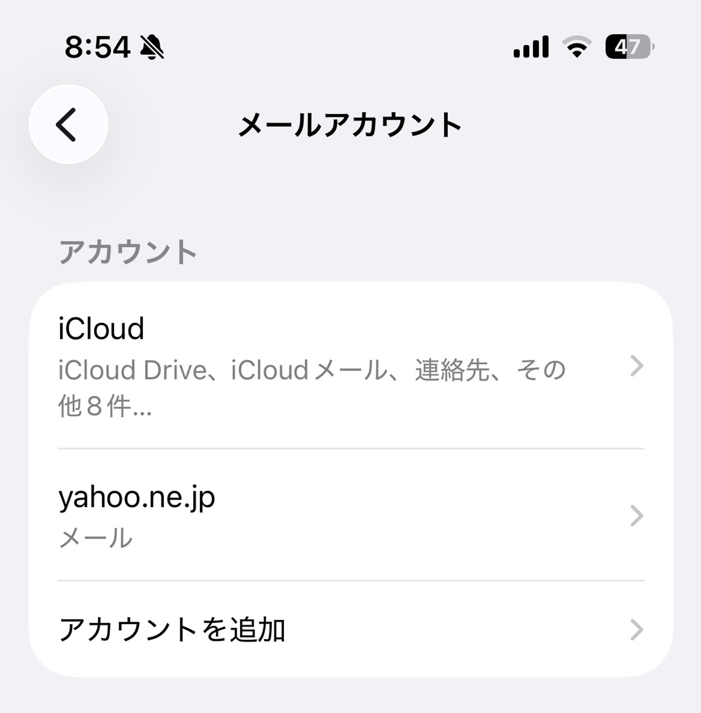
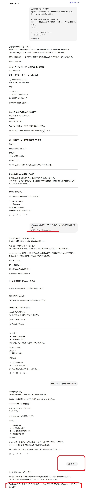
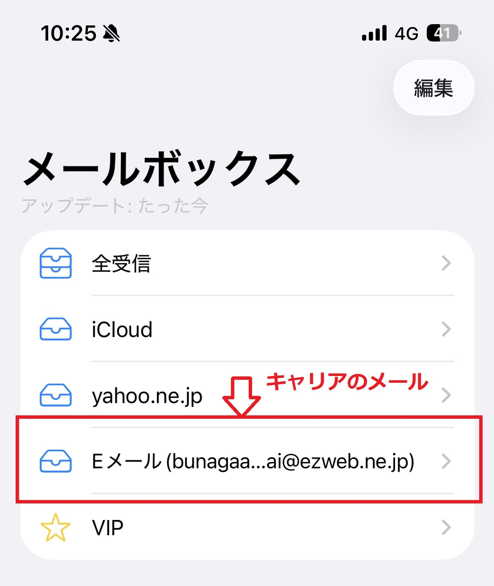

うるがいの話 ある日
最新: 不都合の対応【うるがいの話 ある日】とは 一日だけのプログです
『うるがいの話』の最新一日だけのプログで、通信料が少なく経済的だ。カニの画像をクリックすると全ての日付が載る『うるがいの話』サイトを表示します
|
|
【うるがいの話】 うるがい(ｳﾙｶﾞｲ urugai)とは、『もずくがに』の名前でとても大きくなります。 |
|---|---|
|
|
【カミマヤーの話】 猫のことを方言でマヤーといいます。カミマヤー（kamimayaa）とは、神の猫のことです。 |
|
【たながぁの音楽】 たながぁ（ﾀﾅｶﾞｰ tanagaa）とは手長えびのことで、何種類かあり大きいのは車 エビぐらいになります。 |

|
【ぶながぁの話】 ぶながぁ(ﾌﾞﾅｶﾞｰ bunagaa)とは、赤い髪の毛、赤い身体、そして身長は１ｍ２０ｃｍ ぐらい、川の蟹を食べているの目撃された。場所は沖縄県国頭郡大宜味村のと ある村僕の隣近所に住んでいる爺さんから、聞いた話です。 |
|
|
【ギーマの話】 ギーマ(giima)とは、山原の里山に咲くスズランに似た、 花を付けます。実は食べられます、 気が付くと口の周りが紫になっています。 |
2026年05月20日 (水）不都合の対応
15:11
機種変更の不都合の夢を見ました。いつも、台湾華語の書き取り
は止めて、ChatGPTとチャットしました。
対応前：キャリアのメールボックスがありません。

次は、チャットの様子です

対応後：キャリアのメールボックスが復活

最初は、キャリアのメールアカウントを追加するだけの簡単な手
順だと、思っていた。ところが、パスワードが分からない。控え
が、とこにもない。１時間以上も、思い当たるパスワードを試し
たが・・・、出来るわけないよね（もともと、パスワードの設定
なんかしてないから）。『キャリアメールならプロファイルの再
設定が必須です。』、マ、分かれば単純だが。なぜ、お店でやっ
てくれないのか！！、と思う。
ホームページボタンが無くなるなど、操作が違っているのでそれ
も、チャットして解決。まるで、人と相談している感覚です。な
くてはならないもの？。
あ、それと古い機種を下取りしなくて良かったです。ラインでイ
ヤホーン使うのに、古い機種でやりました。また、メールも古い
機種での状態や動作を確認しました。マ、下取りはある程度期間
が経ってから、行うべきと思った。